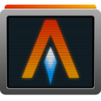
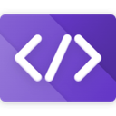

编程开发
共 38 个站点，按权重排序

Alacritty快速、GPU 加速的终端模拟器，专注简单、性能和大量键盘驱动的工作流。
DevToys面向开发者的开源离线工具箱，包含 JSON、YAML、哈希、JWT、Base64、文本比对等工具。是替代把敏感数据粘进随机在线工具的好办法。
Alacritty快速、GPU 加速的终端模拟器，专注简单、性能和大量键盘驱动的工作流。
DevToys面向开发者的开源离线工具箱，包含 JSON、YAML、哈希、JWT、Base64、文本比对等工具。是替代把敏感数据粘进随机在线工具的好办法。